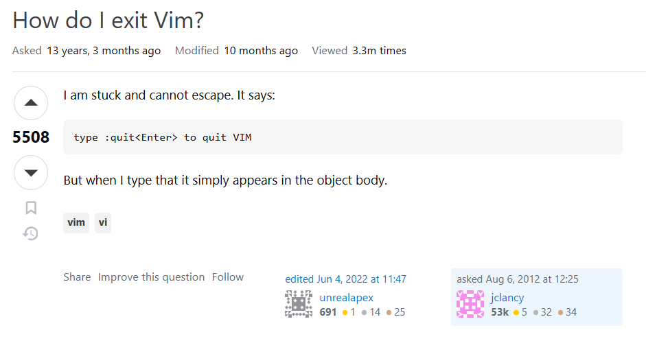
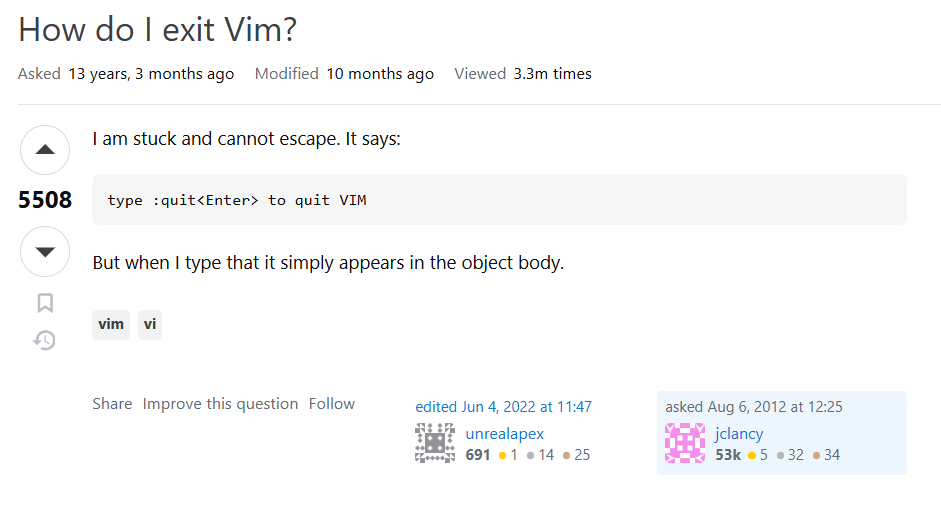

Tutvu erinevate vidinatega
Progeja ning tema vidinad
Milliseid vidinaid ja jubinaid võib siis üks progeja vajada ning kasutada? Just siin ongi mõned soovitused ning näited

Kummipart, kes aitab hädast välja
Kas oled kijrutanud koodi ja sattunud mõne vea otsa, millest ei saa kohe üldse sotti? Seal tuleb appi silumispart! (Rubber duck debugging). Sa selgitad talle üksipulgi oma koodi lahti ning protsessi käigus ehk leiad ka selle koha, mis viga tekitab!

How to exit vim
Järgid netis õpetust ning järsku tuleb välja et oled nüüd Vim'is kinni. Väsinud tundidepikkusest lahenduse otsimisest? Lahendus on kruus, millel on kirjas täpselt, kuidas Vim sulgeda. Nüüd ei pea sa enam avama seda sama Stack Overflow postitust juba mitmendat korda.
 


RGB LED riba
Ei saa piisavalt magada? Liiga palju ülesandeid? Lisa endale mõned RGB-tuled ja järsku näed välja nagu Twitch-streamer, kelle elu on korras. Muudab igasuguse kurva õpilase laua hetkega häkkeripesaks. Meeleolu +10, tootlikkus ±0.

Järjehoidjad
Torka üks neist Järjehoidjadest õpikusse, et märkida peatükk, mida sa väldid, või kasuta seda haruldase hetke tähistamiseks, mil su frontend ja backend lõpuks kokku lepivad.
Raspberry Pi
See väike plaat teeb kõike: jooksutab Linuxit, hostib servereid, juhib roboteid ja avaldab muljet inimestele, kes ei tea, mis asi Raspberry Pi on. See vidin lihtsalt kiirgab targa inimese energiat. Sa ei pea seda isegi kasutama — piisab pildist ja su IQ tõuseb +7.